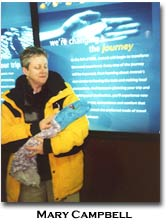
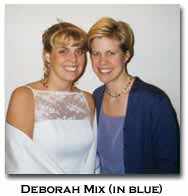

|
Girls Just Want to Have Fun by Mary Baine Campbell
It is embarrassing to have a style in public, because it means you are vulnerable, vulnerable to being "read." People do all kinds of things to avoid this, including pretending to be stylish in some new but store-bought way (following a "model"), which is a more fashionable version of the older habit of writing in an impersonal voice of Latinate neutrality and (thus) authority. Having a style means you are situated, if only in your sign-making self, and not divinely scientific. This is especially scary for people who don’t yet have some kind of institutional authority such as tenure or fame.
The world is largely bleak and life is short. Why be bleak ourselves? Why not create pleasures? If I think of the audience when I write, it is an audience of people who just wanna have fun. Though I do very much include learning about things besides me and my style in the notion of fun! (I once had a difficult midwifery with a graduate student, a poet, who was a marvelous stylist. Every sentence of her dissertation was beautiful, surprising, voiced. Every sentence said "pay no attention to that Modernist woman poet on my title page! Watch me Write!" )
Discovering your style is tantamount to discovering your mind, even your intellectual mission. It is hard, takes years, etc., like learning to play a musical instrument. Much that is in it isn’t ours in particular, but our various situations. No need to fake that, it will out itself if we take writing seriously, if we consider critical writing to be writing and not just self-advertisement or a strategy for advancement.
But to the practical side of this matter. My particular critical writing has, from grad school on, attracted admiration but signaled some askew relation to The Profession (the relation of a poet to it, as it happens). I did get a job at a university, and am now a full professor, and have published some books, so it didn't get seriously in my way as I wended it up the Ladder. On the other hand, I long ago gave up sending articles to journals unless I’m invited to. It may well be that times have changed or are at least changing, but there was a period in which one’s writing had to be instantly recognizable as signifying membership in a particular critical or theoretical school to be recognized as a contribution to scholarship, and there were stylistic methods of indicating that (especially the long footnote naming every important person in that posse who has ever written on the matter under discussion in your own sentence or paragraph. See Bourdieu.) I didn’t understand the outline of my mission in the written world yet, and wasn’t about to signal affiliations that weren’t real. I think, I hope, the new world of online journals will reduce the homogeneity of expectations.
Two great remarks from a critic and theorist of inimitable and thrilling style, Allen Grossman: 1) "Don’t worry, no one’s listening!" and 2) (addressed to a brilliant student whose dissertation chapter was oppressed by stylistic and expressive timidity) "Who are the Police?" In order not to be incarcerated, we have to stop being incarcerated, now. Open the door. If you find yourself driven out of academia because you have too much verve, emotional complexity and fire, than perhaps academia doesn’t exist at all.
BIO: Mary Baine Campbell is a professor at Brandeis University, in the Department of English and American Literature, where she teaches medieval and Renaissance literatures, poetry, and women's studies. Her books include The Witness and the Other World: Exotic European Travel Writing, 400-1600 (1988), The World, the Flesh, and Angels (poetry, 1989), "'Are Sin, Disease and Death Real?'" (chapbook, 1993) and Wonder and Science: Imagining Worlds in Early Modern Europe (1999), as well as a new collection of poetry, Trouble, which has not yet found a publisher. During the summer of 2000, Campbell made a libretto for a new opera by Martin Brody, based on Marie de France's lai about a werewolf and his philandering wife, the Bisclavret.
On the Beauty in Breaking (Down) the Law of Meaning By Erika Renée Williams
In her essay "Così Fan Tutti" analyst, linguist, and feminist Luce Irigaray takes up (and takes on) the western, psychoanalytic tradition by which woman is said to speak, to mean, only with palpable difficulty. If, as psychoanalysis instructs us, gender difference is born "in" language, and if, as common sense allows us, the law of language has been "for centuries" "prescribed" (87) by men, then the truly signifying female subject would seem an improbability. Notes Irigaray (in the words of Jacques Lacan): "There is no woman who is not excluded by the nature of things, which is the nature of words..." (ibid.)
It requires no great leap to turn from the laws of language to the language of law, from the logos that is the symbol of meaning to the logic that is its repository. Man's word bespeaks –and begets–the law that keeps woman outside the scheme of things. Subjected to the circular ratiocination through which meaning is standardized by a compulsory logic that has already determined it as such, woman presumably rests beneath and beyond "the real," inscribed within it only as the lack that guarantees its adequacy.
For Irigaray, the answer to the conundrum of the woman who seeks to mean lies in creatively seizing and appropriating her place of lawlessness. Woman's lack, marked by her tenuous relationship to the process of signification, is reimagined as excess; absence becomes omnipresence, quiescence--chaos: "Is it already getting around— [...] that women diffuse themselves according to modalities scarcely compatible with the framework of the ruling symbolics [?] Which doesn't happen without causing some turbulence, we might even say some whirlwinds,..." (106)
When I reflect upon my own experiences as a woman who speaks to mean and means to write, I recall having effected a few whirlwinds of my own. When a teenager, I was cautioned to modify my prose style, whose program could best be characterized by a profusion of adjectives (often grouped in threes), an obsession with the semicolon, and an insistence upon never using a short word when a longer one would do. Today, as I aspire to signify within the parameters of the academy, my stabs at meaning are still deemed provocations by those I ask to interpret them. My textual analyses, for example, are sometimes called "dense" and insufficiently "logical." The legitimacy and specificity of such critiques notwithstanding, I do wonder if my style, as well as the stuff of which it is made, might be attributed to something other than carelessness or idiosyncrasy. Am I, by dint of my sex, a renegade apt to disrupt the stylistic and scholastic conventions (the laws) of critical discourse? Do I, as woman, resist the mandate to be understood?
Recently, at the close of a class I taught on the possibility of forging modern identity through artistic practice, I received a most uncharitable evaluation from a student, who complained of "learning nothing" and suffering as I "prattled on and on." Although I cannot verify its author, I suspect it is the same young man who was, throughout the tenure of my class, sullen, indifferent, and enamored of Goethe's hero, Faust. If resistance precedes dominance, then perhaps to prattle--"to talk (or write) much or idly," producing "the babble of a child"--is divine.
Now, as I begin a dissertation about the relationship between beauty and ethics in the poetics of the Harlem Renaissance, I am compelled to acknowledge the difficulty, not simply of woman speaking, but of woman speaking beauty. In her apologia for beauty, On Beauty and Being Just, Elaine Scarry laments its banishment from critical discourse. No longer in style within the halls of contemporary academe, beauty is still spoken but only illicitly--"in whispers." (57) A primary argument against beauty holds special significance for the woman who would expound upon it: political in nature, it asserts the burden of beauty for the woman wholly reduced to it and sometimes, endangered when urged to fulfill the desires it incites. (79) The gorgeous movie star is driven by unending and demanding scrutiny to drown her pain in booze and pills. The winsome school girl--robbed of her childhood by premature marriage...or worse. With this in mind, I might be justifiably persuaded to discard the discourse of beauty. Yet a less material, more formal narrative of beauty allows me to complicate the notion that its mere articulation hurts women.
In the eighteenth century, philosophers such as Immanuel Kant subdivided "beauty" into two categories: the beautiful and the sublime. While the sublime, thought "eternal," "principled," and "righteous," was characterized as male, the beautiful, thought "small," "gay," and "charming," was characterized as female and became, as Scarry relates, "dismissible." (83-5) A counter to the political argument against beauty here emerges; in contrast to a conventional feminist claim that beauty is too grave for woman to bear, a conventional philosophical line on beauty, epitomized in woman, attributes to it, an embarrassment of levity. If one adapts the Irigarayan innovation of turning less into more, one can strain the qualities of beauty: insignificance, gaiety, and charm to the celebration of "womanist" superfluity and sorcery. Philosophically (and historically) speaking, then, succumbing to an academic convention—whether feminist or misogynist—by which beauty is to be abandoned, may be abandoning both woman and the peculiar expressivity she makes possible.
Ultimately, we women come to the pleasure of withstanding and reshaping given formats of meaning (no matter from whom they derive). But can we not come to the pleasure of form? For in decrying the phallogocentrism of mainstream signification, Irigaray likewise decries "form," which she counts among an entire set of "values promulgated by patriarchal society and culture, values inscribed in the philosophical corpus..." (86) Irigaray's misrepresentation of "form" derives from her narrow interpretation of the "law" to which it bears resemblance–a move strengthened by her conflation of patriarchy with philosophy. Because she focuses solely on philosophy's seemingly masculinist predilection for transcendent objectivity, she ignores what it gives rise to in the way of improvisation and particularism. By turning again to the controversial discourse of beauty, I can revise Irigaray's narrative of form, which likens it to a normalizing "judgement" dictating the course of "nature" (107) and, in the process, challenge both her traditional characterization and her implicit gendering of law.
In philosophy, judgement, what Kant calls the "middle term between understanding and reason," posits no special law with regard to the nature of things but only, a "principle peculiar to itself upon which law [is] sought." (15) The offspring of judgement, aesthetic judgement, whose specific job it is to divine beauty, has an even more nuanced relationship to the real, for it does not even seek "knowledge" of a thing but simply yields to the form that marks its crystallization "within a subject" (71). If form is the desirous by-product of aesthetic judgement, then the desired object of judgement, law, is arguably a relative of form. Philosophically contextualized, law/form can be grasped, not as delimitation but as aspiration. Impartial until uniquely activated, law/form sculpts reality without itself containing (nor inducing) any essential mold, enacting a logic that is, in and of itself, only analogical.
To close—and to approach more nearly the issue of critical style and gender—I return to and rephrase the question I posed earlier: how can we women writers resist particular stylistic conventions without too hastily rebuffing the very notion of conventionality? Reframing the stylistic conventions-- the laws--of critical discourse as special kinds of forms enables us to perceive not simply their sovereignty but as well, their relationality, and thus, to honor them as the earth beneath our feet that is–ineluctably–tilled when we make tracks upon it.
Works Cited
Irigaray, Luce. This Sex Which is not One. Trans. Catherine Porter. Ithaca, New York: Cornell University Press, 1985.
Kant, Immanuel. The Critique of Judgement. Translated, James Creed Meredith. Oxford, England: Oxford University Press, 1978.
Scarry, Elaine. On Beauty and Being Just. Princeton, New Jersey: Princeton University Press, 1999.
BIO: Erika Renée Williams is a doctoral candidate in Comparative Literature at the University of Pennsylvania. Her most recent public scholarly effort was a paper on the function of the room in Jean Rhys's Good Morning, Midnight, presented at the Poetics of Space Conference at SUNY-Binghamton. This is her first publication.
By Sara Lundquist
I wonder, in academic settings, whether the people judging their younger colleagues for tenure know how to evaluate an electronic journal as a venue for publication. Much is made of submitting work and getting it accepted to REFEREED journals, the oldest and most respected ones especially. So many people who don't know much about one's area of expertise must judge your intellectual worth, and they don't often do it by actually reading what you've written. You have to justify justify justify all the time.
I've learned to be very good at writing narratives, explaining why what I'm doing is important, why I must publish it in this particular place, why it is PRESTIGIOUS to have it published there, why it is of immense importance (not to mention so encouraging) to have someone like a poet & editor of an important print journal, now on-line, value your critical writing and know who you are!!!
"Space and freedom" "the book/poems that interest them"–you probably know how enticing that sounds and how dangerous. I do think that I took a big risk in doing my pre-tenure work on Barbara Guest–my first article about her is painful for me to read because it was so so so fraught with anxiety in the writing–all in her work that was enticing in its experimentalism and peculiarity I felt like I had to shove through a grid.
Fortunately (my goodness, HOW FORTUNATE!), I gave a paper about Guest at a University of Maine conference, and met three highly-regarded scholars of contemporary poetry--all of whom wrote generously and knowledgeably for my tenure case, in ways that no one here was in a position to gainsay. BIO: Sara Lundquist is an associate professor of English at the University of Toledo, in Ohio, where she teaches modern and contemporary poetry. She has published on Barbara Guest, John Ashbery, James Schuyler, and William Carlos Williams. She is currently writing a book on Guest
Elizabeth Treadwell
Dear Mytili and Elisabeth, I suppose the reward is remaining true to oneself, not landscaping or abridging one's journey toward meaning and audience to suit a received form, a status quo, the Suits as it were (one's own demons). (The reward is remaining interested!)
Yrs true, Elizabeth
BIO: Elizabeth Treadwell's recent books include Populace (Avec, 1999), Eve Doe: Prior to Landscape (a+bend, 1999) and The Milk Bees (Lucille, 2000). She edits Outlet magazine and is the Director of Small Press Traffic. Poems will appear soon in Aufgabe, The Germ, 6ix, and The World, along with a chapbook, Stolen Images of Dymphna, from Meow.
Reading the Way She Writes: Critical In(ter)ventions by Deborah M. Mix
During her 1935 lecture tour in the United States, a reporter asked Gertrude Stein, "Miss Stein, why don’t you write the way you speak?" Stein replied, "Young man, why don’t you read the way I write?" (Berry 1). Stein’s question to the reporter has stayed with me. It comes back to me, again and again, as I write literary criticism, as I prepare to teach, as I read or reread. Over the years, I’ve become increasingly concerned with critical voices, both my own and those of others, on the connections (or lack thereof) between the ways in which an author writes and the ways in which a critic reads and speaks about that work. Traditional critical practices, I’ve come to believe, are predicated upon a sense of the critic as a sort of housekeeper: polishing up gleaming surfaces to present to the world, offering neat and tidy explications, and sweeping any leftover textual "debris" under the rug. Such an approach is fairly widespread among literary critics, but the practice seems particularly evident and particularly odious when it is applied to the work of authors, like Gertrude Stein and Lyn Hejinian (and many others), who are working toward the deconstruction of fixity, certainty, authority–precisely the attributes valued in the traditional critical voice. Again and again in my own research, I’ve found the work of innovative writers like Stein and Hejinian being twisted, selectively discussed, even ignored so that it can be fitted into familiar categories, categories where women’s writing and experiment are "allowed." Certainly these strategies are used to contain the radical potential of many voices, particularly when the voice comes from a disempowered location and threatens to unsettle power structures (think, for instance, of past years’ representations of Emily Dickinson as a "madwoman in the attic"). But there is only a relatively small body of work available on experimental women writers. And, as Marianne DeKoven has noted, while the association of a woman writer with experimentalism provides her with a small place in a tiny literary constellation, it also consigns her to a place where it is even easier to miss (or dismiss) her.
Because of the ways in which I read the consequences of these more traditional critical approaches, I know that I cannot participate in them. But figuring out how to sidestep the "bad" elements of such a practice without writing "bad" criticism (sloppy, confusing, pointless, or, worst of all for the academic, unpublishable) has been a difficult and ongoing process. For me, one of the first steps toward writing in a critical voice that seems appropriate to discussions of experimental writing was to relinquish my sense of critical certainty, to admit to and work with the partiality and limitations of any particular way of reading, and to approach the authors and their texts from this "new" position. This process is easier, I think, when the authors themselves are openly uncertain, welcoming the reader who might approach from a different direction, who might be willing to open up a genuine dialogue, rather than to close down possibilities. In Tender Buttons, Gertrude Stein writes, "A white hunter is nearly crazy" (475). Her statement might be read as resonating with Ahab’s quest for Moby Dick, a quest to find a particular quarry in wide open seas, a quest that makes him mad and dooms his voyage. If I approach Stein’s (or Hejinian’s, or…) work as Ahab hunted the white whale, I will become "nearly crazy," and my critical voyage will be doomed as well. The experimental text actively resists that desire for dominance, for colonization by the critic, sometimes forcefully, sometimes playfully. Meanings slip and travel, always moving; concentrating on a single "fish" in a wide open "sea" is to miss the complexity and variety of the text.
The writers themselves often offer direct invitations and challenges to respond to their writing in ways that are speculative, open ended, and unique. Requiring innovative reading, a tolerance for ambiguity, a willingness to frolic, the works can frustrate as well as give pleasure to readers. And these approaches and experiences–uncertainty, ludic play, self-reflection–need to have a place in my criticism. When I look to the works of these authors, I see them offering some suggestions for moving toward an alternative critical practice through their own admissions of tentativeness, enjoyment, and introspection. In The Making of Americans, Stein writes:
In her direct address to her reader, Stein creates an intimacy wherein she can confess her desires, as though she is asking a dear friend or lover (rather than, say, a monomaniacal hunter) for a special kindness, a special way of reading. She warns her reader that she is not writing "an ordinary kind of novel" but one that will require patience and eagerness, a kind of commitment that seems qualitatively different from the dispassionate stance favored in most literary criticism. Rather than the formal detachment required of the hunter-critic, Stein imagines a reader who will be very much involved in the work, bringing her own hopes, desires, and personal investments to the act of reading. And Stein approaches that reader with her own combination of hope, desire, and investment, asking her to "love please" the work she has done.
In Lyn Hejinian’s Writing Is an Aid to Memory, one of her earliest works, she muses on the power of authorial and readerly expectations, tracing some of the same pathways as Stein. "that sweet little block / the taste of a larger pattern" emerges from time to time, appearing only to disappear back into "tired mixed trace of chat back" (n.p.). "the readymade is deceptively passing /its consent to time," she writes, "mass perhaps in a form against it / a cheap reading of what surrounds." Here Hejinian asks her reader to reflect on her practices of reading, her desires for the "taste of a larger pattern." And while she seems respectful of that desire (in fact she admits to having it herself), she is also wary of it. Our "readymade" expectations are "deceptive." If we enter a text carelessly, without an awareness of our potential prejudices or proclivities, we’re likely to seize on those elements we seek, those that are already familiar to us, those that fit neatly into our own critical patterns, resulting in a "cheap reading of what surrounds." She offers a similar reminder to her reader in My Life, writing, "But as I’ve said before, I am nearsighted, and there are many figures in this scene which might form different scenes" (97). As herself both reader and writer of her life, Hejinian occupies a unique position that both coincides with and differs from that of other readers. In a break from the kind of distance one might expect from the autobiographer looking back on her life to present it as exemplary or edifying in some way, Hejinian questions her own authority as reader, her own "nearsightedness."
What I want to say here is that the texts themselves can teach us how to read them. In the passages above, the authors speak directly to readers, encouraging them to break the rules of critical discourse. Stein asks for eagerness, tenderness, love. Hejinian cautions her readers to approach the very act of reading suspiciously, flexibly, imaginatively. It’s not so much a matter of being able to "get inside" a particular author’s mind, to suss out her intentions. And it’s also not a matter of writing "sloppy" criticism that piles up possibilities without purpose. Instead, at least for me as a reader and critic and teacher, it’s a matter of letting my prose wander and wonder. I have never been sure how to interpret a marginal comment on one of my grad school papers that said I wrote "like a prosecutor." While I think that professor found that particular essay’s language infelicitous, I also suspect she admired the single-mindedness with which I argued my interpretation of the work at hand. But I am sure that a "prosecutor’s voice" isn’t the one I want to hear from myself as a critic. Rather, I want to hear a bit of the playfulness of Stein, the speculation of Hejinian, and my own sense of my critical practices as being, well, practices, in process.
What remains at the center of my own work as a critic is to consider the ways in which acts of "doing" help to create the "doers." There is an important relationship that I imagine between myself and the authors I read, write about, and teach. Just as my critical work could not exist without their work, they point to ways in which their works are brought into being by readings. Their writing helps me to interrogate the ways that I construct my own identities as teacher, writer, reader, and I return that attention to their works as well–what are they teaching me, writing about, reading into their texts? As I use my critical training to look for the gaps in the texts, I must always be aware of my own. As I think of the ways they unsettle constructions of identity, writing, language, I must always look for ways to unsettle my own ways of seeing, reading, and writing such that I don’t "refix" what is meant to be open ended. The ways in which my own identity is predicated on teaching, writing, and reading have probably occluded my abilities to see the complexities of these dynamics, but I will continue to work toward clarifying my own ways of seeing, my own approaches toward "reading the way she writes."
Works Cited
Berry, Ellen E. Curved Thought and Textual Wandering: Gertrude Stein’s Postmodernism. Ann Arbor: U of Michigan P, 1992.
DeKoven, Marianne. "Gertrude’s Granddaughters." Women’s Review of Books 4.2 (1986): 12-14.
Hejinian, Lyn. My Life. Rev. and Expanded Ed. Los Angeles: Sun and Moon P, 1987.
–––. Writing Is an Aid to Memory. 1978. Los Angeles: Sun and Moon P, 1996.
Stein, Gertrude. Everybody’s Autobiography. 1936. New York: Vintage, 1973.
–––. The Making of Americans. New York: Harcourt, Brace, and World, 1962.
––– Tender Buttons. 1914. Selected Writings of Gertrude Stein. Ed. Carl Van Vechten. New York: Vintage, 1945. 459-509.
BIO: Deborah M. Mix is a visiting assistant professor in the department of American Thought and Language at Michigan State University. She has published articles on Gertrude Stein and Lyn Hejinian in HOW2, no. 3, and her article on Daphne Marlatt and Betsy Warland’s collaborative poetry appeared in the Summer 2000 issue of Contemporary Literature. She is currently at work on a book manuscript that traces a tradition of American women’s experimental writing from Gertrude Stein to the present.
By Cynthia Davidson
I think that blurring the lines between poetry, fiction, and literary or cultural criticism is a good and necessary thing that is happening of its own accord, not just for women but for everyone. It happens "naturally" because we all see the boundaries differently. The boundaries between gender, genre, class, culture, etc. are of necessity skewed by the differences in how we see them. What happens unfortunately in academia is that those who see these boundaries too differently get knocked out of the game before they even get to graduate school. It's amazing, if you just think about it, how much power freshmen comp teachers have--not in terms of their status or earning power which is ridiculously low, but in terms of how they can calcify an idea or loosen its grip on a young writer's mind. Techniques that readers learn (usually in school, sometimes on their own) to "grasp" a text become one of the determinants of its worthwhileness. One of these techniques is assignment of genre to a text. "Is this a poem? What is a poem?" As boundaries blur, I think, everything becomes more like a poem--open to more subjective reading, less linear, more "dreamlike"--but this too crumbles because then I would have to say that some cultural critiques on the CTHEORY site are poems while certain poems are quite linear indeed and I'd have to call them "verse fiction." Or something like that. A waste of time to do this, I think.
As you pointed out in your prompt for this HOW2 forum, writers are constrained in many ways by the "forum" of academia. What that means is if they write the way they'd like to, nobody pays any attention. There are few things sadder than paranoid academics who have something to say and spend all of their energy scoping out the potential hazards of speaking the way they want to. The truth is that we all get ignored much of the time, and those who aren't ignored occasionally are usually very frantic crazy people. I sometimes imagine what my life would be like if everyone treated me like I was the Rosetta Stone (not fun, no Peace). I don't mean to belittle the paranoid academics--I've been one-- because usually someone has terrified them into being that way, and there is a tremendous amount of fear and loathing that gets bantered around in the name of higher education. But as Audre Lorde wrote in "A Litany for Survival":
If all you want to do is get tenure and you think that conforming will get you there, it probably will and you won't be reading this anyway. But if you're looking for an "instant and this triumph" that "you were never meant to survive" (not necessarily meant literally, but a triumph that will outlast any possible moment of judgment by others, or by yourself) realize that the answer is not to shut up and die, because that is what will happen if you need a triumph and you settle for "safe" expression (when it becomes non-expression). This isn't the same thing as cheerfully taking on and experimenting with forms of writing that are traditionally acceptable. Not at all. If you're being coerced or denied expression--you know it, and it's NOT a pleasant or cooperative experience!
BIO: Cynthia Davidson is the editor of Rio: A Journal of the Arts, an online magazine that publishes literary work and artwork (http://www.engl.uic.edu/rio/rio.html). She teaches writing at SUNY Stony Brook. Davidson is the author of, Athena's Mother, and has contributed poetry and criticism to ACM, ebr, Science-Fiction Studies, and other journals. She is currently working on an article about Alyson Hagy for DLB.
by Rachel Blau DuPlessis
I sometimes hear about The Pink Guitar as a text of desire. A talisman. Hence, as experimentation and critical style is a topic of discussion, Mytili Jagannathan and Elisabeth Joyce asked me to write into this amazing space (HOW2 as a place to stand) and talk about this--this desire, this fact of my having done critical writing in an experimental style. What I am about to say is--it’s not just a style. It’s a method. Who gave me permission? How did I "do" it? As many questions as there are--here are what I think are some answers: Desire, need, and the political-cultural moment. Even reckless, but determined, I was willing to play and fail--I was already an artist. Although it took me years more to recognize this absolutely. What’s going on? I could give you a contradictory narrative. This would be very typical--compliant and resistant me inventing (or addressing) something. I knew this writing was risky--indeed "The Pink Guitar" essay discusses some of the negative reactions of some fairly annoyed, and momentarily powerful, people. (Some of whom were "in charge of" my tenure for my academic job--and against it, too.) Not a joke--of course there are potential negative impacts--some people are going to hate what you do, and possibly think you are self-indulgent or narcissistic (etc.) for choosing essay modes. Thus the risk of this kind of expression--the joy of it--must overcome and swamp prudence or narrow conceptions of what writing is, what a career is. Sometimes you have to wait to feel safe. Safer. It is a very subtle and situational decision. There is no simple "answer" that the past can give the present on this issue. But if you can stand (or can survive) that joyous impudence and imprudence, then proceed. But don’t forget that I was, during this same period, writing critical prose--in Writing Beyond the Ending and H.D.: The Career of that Struggle--prose and analyses that I also absolutely wanted to write. No one was making me do it, as if one kind of writing is better or truer or more authentic than another.
Of course, one is subject to professional pressures. If you jump track, write another way, writing "otherhow," you have to make sure that all your kinds of writing are excellent, tested out, I mean by an interior standard of solidity. That way if other people hate it, you will know how to measure it for yourself, on your own.
So I began with an essay not in The Pink Guitar (something from 1978 called "Psyche, or, Wholeness") and then wrote "For the Etruscans." But it wasn’t "prewritten"--it was a negotiation with materials arrayed. It came about this way. Having given a seminar at a Barnard Conference on Women and Society on the question (not the certainty) of "a" female aesthetic--a burning issue in 1979--I was asked to write it up. So I did. I now see the commitment to multiple citation and to recording many of the voices of that seminar as a mini-Arcades. A feminist Benjaminian Arcades. Although I was committed to collaging other people’s voices with my own as only one among many, in actuality it did not quite work out that way. Authorship is not dissolved by fiat. But that is why the "author" of that essay is myself and "Workshop 9"--the presence of interlocutors was crucial.
I was aware of using modernist "devices" for feminist purposes. The fluid form of talking, the enormously excited and participatory group of women for whom I was the seminar leader--writing into that fervent and palpable and aroused and debating female space was crucial. I was writing into a cultural and political need for analysis and the collection of evidence. Thinking was a real situation. It was a moment (this writing comes from a political and cultural moment). There was nothing willed about it. There was a politics of culture, and I was trying to name some part of it. But without distortion. For I also did not try to falsify or distort what I thought: that "feminine" writing tactics were the tactics that can be chosen by any non-dominant group. The rhetorics are situational, not essentialist strategies. This was not the popular finding then, when we were, in general, in the full bloom of a dynamic and rather absolute sense of female difference. Yet insofar as I was acting oppositionally--refusing patriarchal culture as a choice, I also chose to use the very rhetorics I discuss.
Letter writing to friends. Free writing for poetry. These were some sources. Teaching, as a social free association along the lines of investigation. I think what I did, in these essays, was to invent an intersubjective space, one between reader and text, between writer and reader, between author and evidence, between analysis and need. A looping of response. Not one of hierarchy or claims of controlling authority over a set of materials. And the central strategy of modernism--collage--was another source. I entered the practice of the field (a central strategy of the postmodern)--the creation of an extent or an area, a site in which things happen. Ludic things: Rhythms of apprehension. Stress shifting. Changeups. Carnivalizing analytic discourses. Mongrel, hybrid sounds. Placing the reader, as well as the writer, in a variety of subject places. Faceting. Dissolving the author into the sounds of the text. Making chaos, diversity, mélange. Constructing loose ends! Making there be a porous openness of thought, not a sealing over of thought. There is a loft in this method--and it is not just a style--it is a method. It is not willful writing as in "I will myself to do this because it would be a good thing." It is writing poised as art is on the cusp of willful willessness. To possess this possession, become dispossessed.
If I chose to create desire, attention, loose ends, and an endless intersubjectivity between others as equals (undo "the" binary--I have no goal but this), then I am putting a little bit of utopian change into writing. I am interested. I am interested in this. To change the hard, hard heart. The essay is anti-patriarchal writing as a method of investigation. The essay expresses the need to make something that gives pleasure. That is, aesthetic pleasure as political pleasure--transformation. To the degree that we all live in some form of political, economic, sexual, social and intellectual complicity with forms of the patriarchal, this choice of writing might not be possible. Or seem possible. Yet it is possible. The opening may be small. A pinhole. But it remains possible.
BIO: Readers interested in DuPlessis’s work might want to look at The Pink Guitar: Writing as Feminist Practice (1990) as well as "ƒ-words: An Essay on the Essay," American Literature 68, 1 (March 1996): 15-45, and "Reader, I married me: A Polygynous Memoir," in Changing Subjects: The Making of Feminist Literary Criticism, eds. Gayle Greene and Coppélia Kahn. New York: Routledge, 1993: 97-111. Her work in the long poem, Drafts 1-38, Toll will be published by Wesleyan University Press in 2001.
Some random thoughts on stylistic experimentation By Linda A. Kinnahan
In thinking about the questions posed by Mytili and Elisabeth for this forum, I’m struck by the (logical) necessity to frame these questions in relation to public institutions — be they academic, publishing, or technological structures — that determine or shape the production and reception of our writing. Although the "personal" is mentioned as an umbrella term ("Is inclusion of the personal a taboo, an innovation, or has it been worn out by overuse?"), the invitation to the forum does not pose a host of questions about the personal to the extent that questions are asked about the institutional pressures in our lives. I’m neither trying to assert a polarity between the private and the public, nor suggesting that these questions do so, but am interested in observing how much the "personal" or "private" restlessly unsettles all of my imagined responses to the host of questions so thoughtfully posed by this forum. I can’t begin to think of "models of critical writing" without almost viscerally feeling the compressed time of my days, the need to make use of time efficiently, the need not to waste words or move in tangential directions because (like so many) I’ve got a kid to pick up (and any number of other realities might be inserted here at the end of this sentence).
Probably this has to do with my schedule these days, with wanting to garden but spending much of the day in my office trying to finish a manuscript that never wants to end, while knowing my "work day" will end when kindergarten ends, and that I need to make the oatmeal cookies I promised for my daughter to take to her class for snack tomorrow, and then I need to rush back to school for an evening graduate seminar in "Feminist Poetics," which seems a remarkably wonderful and appropriate course to rush to after such a day. But exhausting in rapid shifts and forms of attention. None of this schedule is unique to me; and no event in the day is distinct, finally, from any other. They echo into each other, and I think of Virginia Woolf as I mash butter into sugar and explain measuring to Chloe. (And of course think of Woolf’s concern with how "Chloe" is measured and learns to measure). And then I think, how so very banal and typical and clichéd that I locate my academic experience in relation to the domestic and the maternal, and maybe even how self-centered, given this stage in my life. (I would have written a different response ten years ago). And so I undercut myself.
This undercutting comes from somewhere, and I suspect it’s related to the training I’ve received as an academic, which powerfully prompts me to analyze my critical ground to the degree that much gets censored. And what is interesting to me is not that everyone should know about my daily life but that I censor its possibilities for taking me somewhere in terms of my critical writing. I wonder how I might more fully allow the echoes that go on throughout my day, that carry soundings from one arena to another, to more fruitfully be admitted into the process of critical writing, whether or not the process shows up in the final product. Thinking back, it’s the essays that allow the process to show up (I just taught DuPlessis’ "For the Etruscans" last night) that first prompted me to consider how the essay form functions to contain and censor; what I’m interested in thinking about now is how those efforts to contain and censor are internalized in my thought processes. When I spoke earlier about "different forms of attention," I meant that the boundaries between ways of thinking so often descend from the form of writing/creating we are doing, so that I begin thinking in certain ways that differ depending on whether I am moving toward an essay or a drawing or an oatmeal cookie or a chat with my daughter. I’d like to disturb that originary moment (which isn’t originary at all), in which the shapes of my thinking are too often determined by the shape/genre/form of the product.
While I love the "innovative" essay, I also realize I can’t focus on writing that essay as an end in itself. This has partly to do with my own sense of insecurity and partly (largely) to do with practical knowledge of the hierarchies of the academic institutions in which I work. I’ve read too many files as a member of a search committee or a tenure committee. And we all know that the ability to stand up at MLA, for instance, and read off of a randomly arranged series of notecards is "allowable" for only a few. I’d like to think this won’t always be the case but in the meantime, I’m trying to tackle the issue from the other end — where the essay gets started in our heads, what shapes the directions we feel free to take or prohibited from considering, what happens when a different focus of attention is brought to the matter.
Although I like to think that a more permeable focus would help me not to feel pulled in a million directions (and unfocused about most of them), I also realize that many tasks in critical writing do involve isolated, systematic, and synthetic processes that demand a comprehensive grasp of an issue (and thus, lots of research, reading, thinking) and an ability to situate a discussion in relation to other discussions. I actually enjoy these processes, but at the same time they are probably the most problematic for me when I think of issues of time and writing, because they suck up time, lots of time. So, in deciding how to choose my time, I most often find it imperative for professional reasons to read that extra article, etc. rather than sit and write in the kind of relaxed (which doesn’t mean unfocused or unthoughtful) manner I’m enjoying right now. This choice is intensified by the overwhelming amount of information available now, and the difficulty of letting go of the notion that I have to keep up with everything. Technology terrifies me in this way, because it presents itself in my life as a way of demanding more from my time, asking that I keep track of and make use of more information. My own terror, I’m sure, closes me off to many of the benefits of technology and of the web, and perhaps as time eases up I can also relax in front of the computer. Who knows. And so, it’s now time to turn off the computer and pick up Chloe. No cookies today, but maybe a little PBS and some time in the yard before class tonight, thinking about Erica Hunt and matters of the sandbox.
BIO: Linda A. Kinnahan is an associate professor at Duquesne University, where she teaches twentieth-century American and British literature and women’s studies. Her book, Poetics of the Feminine: Literary Tradition and Authority in William Carlos Williams, Mina Loy, Denise Levertov, and Kathleen Fraser, examines modernist and contemporary poetry in relation to gender and language. She has also published on contemporary American and British women poets such as Denise Riley, Carol Ann Duffy, and Barbara Guest. She is completing a book-length study of feminist reading practices and contemporary poetry and is actively pursuing a second book project on modernist women poets and economics.
By Jen Hofer
Formal Negotiations
Objects are. And emotions where objects are and shifting changeable be, is. And are. And are thought. The world doesn’t need us to express it, though in our expression (the face we show the world and the words with which we face the world) it is a different world. Always in words and in the world a different world.
What question can be honestly answered the same way again and again?
During a recent and rare good night’s sleep in Guadalajara, I dreamt that George Oppen died. The dream tears are not real tears though I believe, tearless, the dream is real. So the dream’s tears are in the dream real as the dream abuts the real in moments of overlap we might call "writing" or we might just call. When I say "dream" I certainly don’t mean only sleeping, and certainly never asleep. We read and speak to wake.
What question can be honestly answered the same way again and again? Doesn’t a formally same answer suggest (impossible, happily) a sameness of question, impulse, pressure?
It’s not a question of existing outside a market (there’s no there there), of dodging the negotiations in favor of some beautiful walk in the woods. Nor is it a question of reifying the dividing lines as if "the one" and "the other" have no overlap, are not, as processes, made of and in the overlap. It’s a question of exigencies, of paying attention (and to what), of necessary appreciations and necessary deprecations. Of measure, and all in good measure.
What question can be honestly answered the same way again and again? Doesn’t formal conformity obscure nonconformity of content? Or smooth the discontent so as to soothe the unsuspecting reader? Can we be lulled into subversion?
It’s a question of which exigencies are most compelling in a given circumstance, a question of how to write the exigencies of the circumstance most compellingly. The pressures of the poem–what I consider as a standard or measure, a fuel–resist any kind of taking for granted. So a phrase like "this is how it’s done" would simply have no place in any action, exploration or expedition approached as poem. It’s a question of belief and question, a question of attitude or stance, of position. A question of posit and not answer, of essay and not statement. Of what is this world, and again what is this world.
What question can be honestly answered the same way again and again? And who if truly compelled could answer it thus? (It is in the act of speech that sight resides and flight takes, in the act of act that the play shimmers. As a beginning, wanting seeing and feeling, to do, do over and all other. As a beginning, asking to ask.) Is not the answer, the question, to ask?
corporeal manifestoes
"Certainly glittering is handsome and convincing"
(a page pretends to stand in: sans red velvet curtains: oh can you imagine it: say can you: providing a pleated frame or content: or content)
About kindly about wind (remembered argument) about wind kind kin (forget it, angel) unkind spectacle about glasses stylish expectorate, about spreading and perhaps borrowing whether or not and there is some use. There is about use, angel, forget kindly to convince: what is the use, etc., "what is the use of a violent kind of delightfulness if there is no pleasure" no about faces or kitties if there is no substance no recitative no je sais quois if there is no pleasure "no pleasure in not getting tired of it."
"The best thing to do is wear it (there is no bargain is there) and then be reckless and then be reckless be reckless and resolved on returning gratitude. Gratitude return (hair windy in predictable paths yet wind nonetheless gives sight direction) and then the box becomes. Then the box becomes wood stained green and dust tells us skin softly. Another kind of hair kindly. No disgrace in care but the uses of the letter a. A letter a plan of action a hum so as the mind’s mind to distract, attract, punctuate. Not like but like. Asked but done. Truncate so quicker kinder to glitter upon. In the eye of.
Who does not want a finer fancy present. Close quote. Want it finer and fancy present and fancy with no error but her erroneous diligent diligence. Subtract audacity and only the blind no carafe. Mercenary questions extract flutter relief. Shutter release the tongue makes it strange. Willful erroneous or kind. Any kind. Q & A and Ps & Qs and Q & U and mind yours in persistence or play it again, this time with kindness.
About spreading and picking up speed to tremble end over end the difference is a silver triangular box from Oaxaca and a rectangular wooden box from New York. The difference is of memory enticement and use value, as the value is not equal but measurable. Frames order the arrangement, style the system to blueprint a suggestible hazard. Not mercenary necessity but things come out of the box that you can count. In reference to a staircase. Keys with locks long lost, one ring, one watch long stopped fit for a princess when the weather says cozy up incontrovertible. Held aloft against a sky provides a ground or a view to transparency.
To take the thing to turn to turn the thing a view from not new from every angle cut glass angled to turn the thing yet not all at once as turned in a hand take it in and turn then turn return.
A place is pale in comparison but tin in the teeth does not deceive. Deceit being the least measure, ratchets do come in handy, and hook and eye, engine and a service economy we cannot but benefit from. There are exceptions. Exceptions are windy and fluttery and heartfelt which means something.
BIO: Jen Hofer is originally from the San Francisco Bay Area and currently lives in Mexico City where she is editing and translating an anthology of contemporary poetry by Mexican women which will be published by University of Pittsburgh Press and Ediciones Sin Nombre in 2001. Her translations, essays and poems can be found in recent or shortly forthcoming issues of Explosive, Facture, Lipstick Eleven, Tripwire, West Coast Line and in the a+bend press chapbook "as far as." Duration Press will be publishing her translations of the Chilean poet Soledad Fariña in its Fall 2000 chapbook series. Recently, she and her fiddle have joined forces with the visual artist Melissa Dyne to form Groundzero Telesonic Outfit International.
(this issue's table of contents)
|